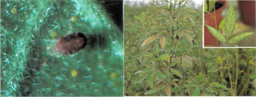

| Home |
| RED GRAM & CHICKPEA |
| 1. Gram pod borer |
| 2. blue butterfly |
| 3. grass blue butterfly |
| 4. plume moth |
| 5. Spotted pod borer |
| 6. spiny pod borer |
| 7. field bean pod borer |
| 8. pod fly |
| 9. stem fly |
| 10. eriophyid mite |
| 11. Blister beetle |
| 12. pod wasp |
| 13. flower webber |
| integrated Pest Management |
| questions |
| download notes |
PESTS OF PULSES - RED GRAM & CHICKPEA :: Major Pests :: Red Gram Sterility Mite
10. Red Gram Sterility Mite: Aceria cajani (Eriophyidae : Acari)
Distribution: Identified only in India where it is widespread and common. It is the vector of the pigeon pea sterility mosaic disease.
Damage symptoms: Infected plant s develop light green or chlorotic leaves which have mosaic patterns . Most infected plants do not bear flowers.
 |
Bionomics: The mites are difficult to see with the naked eye. They are 0.2 mm long, light pink, spindle shaped, and are normally found feeding on the underside of leaf lets. Milky white eggs are found on vegetative terminals. Many nymphs are found on young folded leaflets. Plant - to-plant infestation occurs by the wind dispersal of infective mites.
Management
- Use resistant pigeonpea varieties.
- Spray dicofol 18.5 EC 1.0 L or wettable sulphur 40 WP 3.0 kg or endosulfan 35 EC 750 ml or or dimethoate 30 EC 1.0 L or phosalone 35 EC 1.0 L in 700 L water per ha
- Avoid synthetic pyrethroids as they cause resurgence after repeated spray.